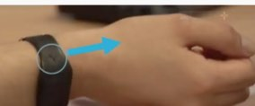
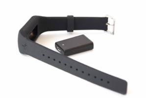
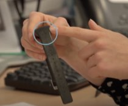
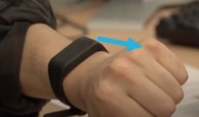
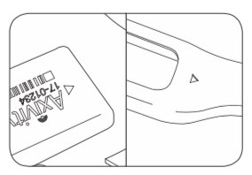
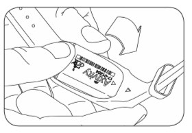
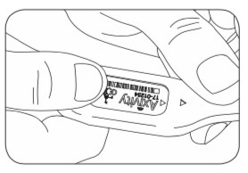

Axivity AX6 (Patient Materials)
- General Device Introduction
- Data transfer protocol for patients
- Device How To / setup for wear
- Troubleshooting/FAQ
- Device return
General Device Introduction
The Axivity (AX6) is a wrist worn sensor for monitoring and recording movement including body position, acceleration, and direction . This data can be used to identify activities, such as sitting, walking, falling, etc. Axivity records data every second and stores it inside the small black sensor “puck” (Figure 1).
How does this device look?
Axivity comes in two parts: a silicone strap and a small sensor “puck” as illustrated in Figure 1, which is inserted inside the wristband and worn on the wrist (Figure 2).
 |
 |
| Figure 1: Axivity wristband and sensor “puck” | Figure 2: Placement on a wrist |
|
| Figure 1: Axivity wristband and sensor “puck” |
| Figure 2: Placement on a wrist |
What does it record?
The Axivity automatically records anonymised movement data on the sensor “puck”. This data includes: your position of wrist, the acceleration and the direction that you move.
How is it used?
Axivity is worn on the non-dominant wrist - i.e. the side you use less - using the provided silicone strap during day and night. It can be worn for up to 9 days without having to be recharged and is suitable for day-to-day activities, including showering and bathing, but must not be worn for activities such as diving, swimming, and sauna/steam rooms.
Data transfer protocol for patients
As a patient: do I need to do anything on a daily basis or all N days?
Yes. You will be asked to wear the Axivity wristband for 5-days, then take a 2-day break from wearing it, then wear it for a final 5 days . Please charge the device during the 2-day break period so that it becomes fully charged.
After the complete study period you will either: (i) be provided a new device by a clinician; (ii) visit a clinician and they will transfer data for you; or (iii) receive another device to wear.
As a patient: do I need to do anything after each individual period of device / app use ended?
No. Transferring data from Axivity will be managed by your clinician. They will contact you to arrange an appointment after the study period. If no specific arrangements are made, the device will simply be returned together with all other devices at the end of the study period.
As a patient: do I need to do anything after my full periods of use of a specific device / app ends?
Yes. After your full period of use ends in the trial, you must go to the study site. The research team will take the device and transfer your data from it.
Device How To / setup for wear
The AX sensors are placed in the silicone wristband that is worn like a watch of fitness band.
What sort of a device / application is this, what is it for and how does it work?
| Axivity is a simple sensor device for recording movements in daily life, which you will be asked to wear for 5 days. |  |
|  | This is worn on your NON-DOMINANT wrist (the side you use less). It should be snug on your wrist, not too tight but not so loose that it could slip or twist. When a watch strap is worn the buckle typically starts at 12 o’clock – this would make the engraved pattern always face you on the 6 o’clock inside edge, and so always be closer to the thumb. |
| If you have the watch on your LEFT arm, the engraving will be closer to your little finger. |  |
 |
If you have the watch on your RIGHT arm, the engraving will be closest to your thumb. |
Once you have turned it on you do not need to do anything else but wear it. Please wear it at night during sleep too.
- It is safe to wear. The strap is made from soft, silicone and should not cause any irritation on your wrist.
- It is waterproof so can be worn in the shower, bath or swimming but please take it off during diving or a sauna. Other than that, continue with your normal routine whilst wearing the watch.
- The battery will last 30 days so you do not need to charge it.
If the sensor is not already fitted on the band or if the sensor falls off the strap, follow these steps to attach the sensor to the watch strap:
| Locate the arrow on the AX and align this with the small arrow on the underside of the band. |  |
| Gently push the AX into the cavity, the silicone will deform as it enters. |  |
| Fully insert the AX until the silicone completely encapsulates the device. |  |
| Fit the band on your wrist. |
This is worn on your NON-DOMINANT wrist (the side you use less). It should be snug on your wrist, not too tight but not so loose that it could slip or twist. When a watch strap is worn the buckle typically starts at 12 o’clock – this would make the engraved pattern always face you on the 6 o’clock inside edge, and so always be closer to the thumb.
If you have the watch on your LEFT arm, the engraving will be closer to your little finger.
If you have the watch on your RIGHT arm, the engraving will be closest to your thumb.
Once you have turned it on you do not need to do anything else but wear it. Please wear it at night during sleep too.
It is safe to wear. The strap is made from soft, silicone and should not cause any irritation on your wrist.
It is waterproof so can be worn in the shower, bath or swimming but please take it off during diving or a sauna. Other than that, continue with your normal routine whilst wearing the watch. The battery will last 30 days so you do not need to charge it.
If the sensor is not already fitted on the band or if the sensor falls off the strap, follow these steps to attach the sensor to the watch strap:
Locate the arrow on the AX and align this with the small arrow on the underside of the band.
Gently push the AX into the cavity, the silicone will deform as it enters.
Fully insert the AX until the silicone completely encapsulates the device.
Fit the band on your wrist.
What will I need to do before I can start using this?
If you are about to begin using the AX6 device and it has been given to you more than 2 days ago, please follow these steps to make sure it is fully charged before you begin the recording:
| Charging Instructions |
| The Axivity sensor can be charged through its micro USB connector using a cable connected to a standard power supply. For example, a 5V AC adapter to a wall socket, or a USB port on a computer or externally powered USB hub. An LED light will be amber when the AX6 is charging. Full charge will be indicated by a solid green (not connected to a computer) or pulsing white (connected to a computer) – this may take up to two hours. |
 |
| Charging Instructions |
| The Axivity sensor can be charged through its micro USB connector using a cable connected to a standard power supply. For example, a 5V AC adapter to a wall socket, or a USB port on a computer or externally powered USB hub. An LED light will be amber when the AX6 is charging. Full charge will be indicated by a solid green (not connected to a computer) or pulsing white (connected to a computer) – this may take up to two hours. |
|
Any account setup required?
There will be no account setup to use the AX wrist band.
Needs pairing with hub-device?
There will be no pairing required to use the AX wrist band.
Any configuration / assembly required?
There will be no configuration required to use the AX wrist band.
Troubleshooting/FAQ
The device / app seems to have stopped working: what should I do?
Battery?
You may not be informed instantly that your device is out of the battery. Usually the battery should be charged and ready to use for your entire study duration. If you are about to begin using the AX6 device and it has been given to you more that 2 days ago, please follow these steps to make sure it is fully charged before you begin the recording.
Connectivity issues?
Not Applicable.
Need to restart or log in again?
Not applicable.
Using the device / app is uncomfortable to me: what can I do?
Adjust wear style?
You may need to change a size of the strap. If you feel the device is dirty you can clean it with wet wipes. After showering or exposing the device to water, please wipe it down with a dry cloth. This ensures that the label printed onto the device does not peel off.
Adjust usage pattern?
You may not be applicable to wear them 24/7 or encounter a skin sensitive situation. Please consult your clinician for further advice.
How can I get help with using this?
If you have any other questions or concerns, please contact your local study centre:
| Newcastle upon Tyne, United Kingdom | Rotterdam, Netherlands | Kiel, Germany | Muenster, Germany |
|---|---|---|---|
| Person Name, Centre Name, Location | Person Name, Centre Name, Location | Person Name, Centre Name, Location | Person Name, Centre Name, Location |
Newcastle upon Tyne, United Kingdom
Location
Person Name
Centre Name
Rotterdam, Netherlands
Location
Person Name
Centre Name
Kiel, Germany
Location
Person Name
Centre Name
Muenster, Germany
Location
Person Name
Centre Name
Device return
What do I do when a period of device use is over?
Please store the device in a safe place and make sure it stays clean and dry. Please contact the person that provided you with it to arrange further steps.
Before the device is returned or disposed of: does any data need to be transferred?
No, data are stored safely on the device. No further action is required.
Do I need to return the device somewhere?
Please contact the person that provided you with it to arrange further steps. You will have to return it either in person or by post – subject to further individual arrangement.